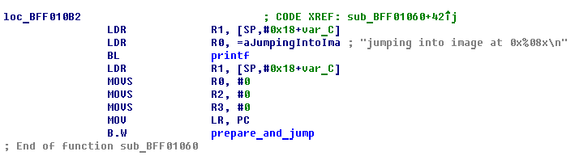
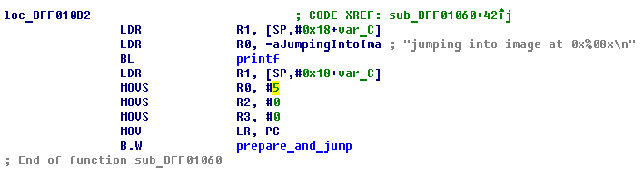
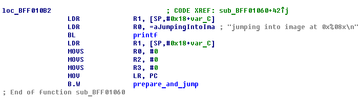
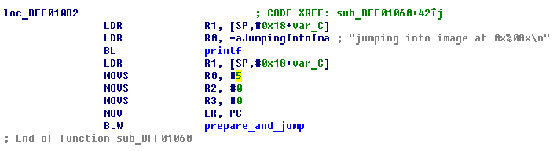

Booting diags from iBoot recovery shell
Created on 19.04.19
Important note: this article discusses Apple internal software. This information is provided for educational purposes only. Also playing with low-level software directly may lead to a hardware damage. You have been warned
The problem
Originally diags are loaded either by diags shell command or by diags boot-command. Both use the same routine that first tries to find diags in NOR/nand_firmware and if fails tries to load it from filesystem with index from boot-partition environment variable with path taken from diags-path/diags-vendor-path variable
On RELEASE-fused iBoot the shell command isn't available at all (since iPhone OS 3.1). The boot-command is still there (only on 2nd-stage flashable variant called "iBoot"), but requires many actions: patch signature checks, patch boot-command hardcoded variable in iBoot to always have value diags, put diags image on filesystem and create diags-path variable
In my opinion in many cases it would be more convinient to load diags using recovery shell. But on newer devices (e.g. iPhone 5) if you simply send an image over USB and send go-command, it won't work, you'll only get a black screen
The solution for that is very simple though and requires literally one byte patch (among signature check patch of course)
The solution
There's a function in every iBoot called prepare_and_jump. Its prototype:
void prepare_and_jump(enum boot_target boot, void *ptr, void *arg)
It's used to perform jumps to various images: like another iBoot, kernel or diags
Let's talk about args it takes:
- boot - boot target. Available targets:
BOOT_UNKNOWN = 0
BOOT_HALT
BOOT_IBOOT
BOOT_DARWIN
BOOT_DARWIN_RESTORE
BOOT_DIAGS
BOOT_TSYS
BOOT_SECUREROM
BOOT_MONITOR
BOOT_DALI - ptr - pointer to raw image to jump on or sometimes to a boot trampoline
- arg - pointer to raw image when a boot trampoline is used
go-command uses BOOT_UNKNOWN (0x0). It's fine for booting iBoot, but not diags. What we're going to do here is to make it use BOOT_DIAGS (0x5) instead
The patch
First we need to find go-command handler function. It's very easy - it always prints something like jumping into image at 0x44000000, so we can find it by searching where such string is used:

First argument for prepare_and_jump is loaded from R0 according to the calling conventions. Patch this MOVS R0, #0 to be MOVS R0, #5 (00 20 to 05 20):


First argument for prepare_and_jump is loaded from R0 according to the calling conventions. Patch this MOVS R0, #0 to be MOVS R0, #5 (00 20 to 05 20):

That's all. Don't forget to patch signature checks. And then you can send Image3 with diags over USB and jump to it just by sending go-command